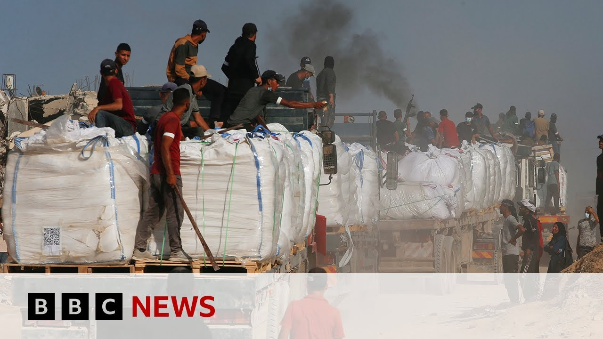

【2025-06-27 BBC News 加沙调解方加紧停火努力，哈马斯官员表示】
Summary: Efforts to mediate a ceasefire in Gaza are intensifying amid ongoing conflict and humanitarian crisis, with Hamas officials reporting progress despite continued violence and aid shortages.
摘要： 在持续冲突和人道主义危机中，加沙停火调解努力正在加强，哈马斯官员报告称尽管暴力和援助短缺仍在继续，但已取得进展。

⏱️ Estimated Reading Time: 13 min
📚 六级生词 📚 雅思生词 📚 托福生词 📚 专八生词 📚 SAT生词 📚 考研生词 📚 GRE生词 📚 高考生词
Let us turn to the other conflicts at the moment in Gaza, because that is where it is much harder to reach an agreement and a ceasefire.
让我们关注当前加沙的其他冲突，因为在那里达成协议和停火要困难得多。
Earlier, senior Hamas officials said, told the BBC, that there were intensifying efforts to try to mediate and reach progress on reaching a ceasefire.
早些时候，哈马斯高级官员向BBC表示，各方正在加紧调解努力，以推动停火取得进展。
And that, despite the fact that on Wednesday, the Hamas run health ministry in Gaza said that 45 people were killed that day alone.
尽管周三加沙的哈马斯卫生部称当天就有45人丧生。
Let us bring in our Gaza correspondent Ruchdi Abwaluf.
让我们连线加沙记者Ruchdi Abwaluf。
Ruchdi, tell us more about the deaths in the last 24 hours, that they also from people who were queuing for aid distribution.
Ruchdi，请告诉我们过去24小时死亡事件的更多细节，其中包括排队等待援助分发的人。
Yeah, Mark, another day of war in Gaza, since midnight, the Hamas-Ran civil defence agency said about 19 people were killed.
是的，Mark，加沙又一天的战争，自午夜以来，哈马斯管理的民防机构称约有19人丧生。
Three of them were near the Gaza humanitarian foundation, in central Gaza.
其中三人位于加沙中部的人道主义基金会附近。
Three bodies were taken to hospital and 35 people were injured.
三具遗体被送往医院，另有35人受伤。
The 19 people were killed, were killed also in different places.
这19人是在不同地点遇难的。
The biggest attack was in a school in Shakhir-du-An area in Gaza City, where about nine people were killed.
最严重的袭击发生在加沙城Shakhir-du-An地区的一所学校，约九人丧生。
Another incident in the middle in Nusairat camp, and one airstrike in Hanyunis that killed five people.
另一起事件发生在Nusairat营地中部，还有一次空袭在Hanyunis造成五人死亡。
Yesterday, there was about 70 trucks of food were allowed in to Southering Gaza, but over now, they were looted.
昨天约有70辆食品卡车获准进入加沙南部，但现在它们被洗劫一空。
All of them about 70 trucks carrying even medical supplies and the flour and you know, aid for the people were looted by gangs and by some of the clans belonged to families in the south.
所有约70辆卡车，包括医疗用品、面粉等民众援助物资，被南部家族所属的帮派和部族抢劫。
But in the north, about 25 trucks were allowed into Gaza and were secured for maybe the first or the second time by families and some say that Hamas secret police was also trying to help some volunteers securing the trucks into a warehouse belonged to the Yohan in Gaza.
但在北部，约25辆卡车进入加沙并可能首次或第二次由家庭保护，有人称哈马斯秘密警察也协助志愿者将卡车护送至加沙Yohan所属的仓库。
Using the old mechanism of sending SMS messages to people, and we have seen in the last half an hour people queuing, very long queue of people in the front of this warehouse waiting to receive aid.
通过短信通知的老方法，过去半小时我们看到仓库前排起长队等待领取援助。
And it's because of that looting, Rushdi, that the Israeli government we understand has put out a new rule halting aid deliveries over the next 48 hours in order to find a way to stop what they accuse Hamas of looting the aid.
正是由于这种抢劫，Rushdi，以色列政府据称已出台新规，暂停未来48小时的援助运输，以阻止其指控的哈马斯抢劫援助行为。
This was a very bad news for the people of Gaza because this was worse in the already you know, disaster situation in Gaza.
这对加沙民众是极坏的消息，因为本已灾难性的局势更加恶化。
I spoke to Hamas official today about this as far, but I did ask him about the Israeli decision and they said Hamas did not involve at all in securing or stealing the aid from Gaza.
我今天就此询问哈马斯官员，他们表示哈马斯完全未参与保护或抢劫加沙援助。
But it was a very bad shocking news for the people of Gaza because the very little aid is allowed is near enough, not near enough, but it is allowing.
但对加沙民众这是极其震惊的坏消息，因为本已微薄的援助将更少。
I mean, Israel every day is allowed, and suspending the aid into Gaza will means more suffering and more starving, and the people are exhausted because since the war is young and March very little, aid allowed into Gaza.
以色列每日允许的援助本就极少，暂停运输将加剧苦难和饥饿，民众已精疲力竭。
And even with opening the distribution centers backed by the Americans in the south, that was not enough because like 80% of the people who queue every day did not end up with getting any food.
即使美国在南部支持的分配中心开放也不够，因为约80%每日排队者最终得不到食物。
So this decision will no doubt worsen the situation.
这一决定无疑会恶化局势。
Yeah, and a reminder that before the 7th of October, some 5 or 600 trucks per day of aid were getting into Gaza, so it has been a trickle since then, and another hold up for two days is of course disastrous for the people in Gaza.
需提醒10月7日前每日有约500-600辆援助卡车进入加沙，此后锐减，再暂停两天对加沙民众无疑是灾难。
Ruchdi Abu Al-Uf al-Qa'r respondent for Gaza, currently based in Cairo, thanks very much indeed.
加沙通讯员Ruchdi Abu Al-Uf al-Qa'r，目前驻开罗，非常感谢。
Well, let us turn to Gersh on Baskin, who is a former Israeli hostage negotiator who has spent almost two decades negotiating with Hamas, and secured the release in 2011 of the Israeli soldier Gila Chalit, who had been held for five years by Hamas.
现在转向Gershon Baskin，这位前以色列人质谈判专家与哈马斯谈判近二十年，曾在2011年促成被哈马斯扣押五年的以色列士兵Gilad Shalit获释。
Gersh on Baskin, very good to talk to you.
Gershon Baskin，很高兴与您交谈。
Do you see now an opportunity for momentum in wrapping up the war in Gaza after the ceasefire with Iran?
您认为在与伊朗停火后，现在是否有机会推动结束加沙战争？
It seems to me that the only way, perhaps the best way, the fastest way to end the war in Gaza is for President Trump to do what he did with regard to the war in Iran.
在我看来，结束加沙战争唯一或许最佳最快的方式是特朗普总统像处理伊朗战争那样介入。
He simply told the parties that it's over, and now there's a ceasefire.
他只需告诉各方战争结束，现在停火。
This is what Trump needs to tell Netanyahu that the war is over, Israel needs to withdraw from Gaza.
特朗普需告诉内塔尼亚胡战争结束，以色列需撤出加沙。
He needs to tell Hamas what they already know is that they can no longer govern Gaza.
他需告诉哈马斯他们已明白不能再统治加沙。
He needs to tell Mahmoud Abbas of the Palestinian Authority to point some legitimate person to form a temporary government over Gaza.
他需要求巴勒斯坦权力机构主席阿巴斯指定合法人选组建加沙临时政府。
And needs to tell the Arab countries Egypt, in Jordan and the Saudis and the Emirates and anyone else is willing to help.
还需告知埃及、约旦、沙特、阿联酋等愿意协助的阿拉伯国家。
It brings law and order back to Gaza.
这将恢复加沙法律与秩序。
This is the way to move forward.
这是前进的方向。
This is the only way to get the hostages home to end the war and have a ceasefire.
这是让人质回家、结束战争并实现停火的唯一途径。
And yet he seems to have done that in January, Gersh on.
但他似乎在一月份就做过，Gershon。
I mean, I was in Tel Aviv in January when the first ceasefire came in, and it was, of course, after Trump's, Trump leaning on both sides.
一月份首次停火时我在特拉维夫，那正是在特朗普向双方施压后。
But as you well know, Benjamin Netanyahu faces so much pressure from the right wing, the far right of his cabinet, not to accept a permanent end to the conflict.
但您清楚，内塔尼亚胡面临内阁极右翼的巨大压力，要求不接受永久结束冲突。
So unless he sort of dismisses that pressure from the likes of the far right ministers, this war is going to keep on going, isn't it?
因此除非他抵制极右翼部长的压力，否则战争将持续，对吗？
Well, you're 100% right, but the question is can Netanyahu say no to Trump?
您完全正确，但问题是内塔尼亚胡能对特朗普说不吗？
Look at what happened three nights ago when Israel had its claims heading for Tehran to bomb Iran again.
看三晚前以色列战机本欲再次轰炸德黑兰时的情况。
And Trump simply told Netanyahu to have them do a U-turn and that the war is over.
特朗普直接命令内塔尼亚胡调头并宣布战争结束。
He told Netanyahu not to retaliate for the last rocket that was fired by Iran and the ceasefire is holding.
他要求内塔尼亚胡不对伊朗最后发射的火箭弹报复，停火得以维持。
It seems to me that Israel is so dependent on the United States today and the relationship between Netanyahu and Trump is such that Netanyahu is incapable of saying no to President Trump.
在我看来，以色列如今极度依赖美国，内塔尼亚胡与特朗普的关系使他无法拒绝总统。
So I think that either he is going to tell this to his government that he has no choice and they will stay because they have no better option than staying in Netanyahu's government or they're both the government in Netanyahu bringing Israel to elections.
因此他要么告知政府别无选择，要么解散政府推动以色列大选。
Which is something that he's thinking about anyway.
这本来就是他考虑的事。
Yeah, and he is climbing in popularity polls, of course, but current polls suggest that he would still fall short of an absolute majority.
是的，他民调支持率在上升，但当前民调显示他仍无法获得绝对多数。
But, Gershon, you know Hamas, well, you've been negotiating with them for such a long time.
但Gershon，您了解哈马斯，长期与他们谈判。
I mean, they are likely to hold on to their bargaining chip, the remaining hostages, about 50 of them, 28 of them believe to be dead until the very last moment aren't they?
他们很可能坚持保留剩余约50名人质（其中28人据信已死亡）作为筹码直到最后，不是吗？
And until they can secure an assurance, some kind of written or legal assurance that there will be a permanent end to the war.
除非获得战争永久结束的书面或法律保证。
So unless they get that, then they're not going to release the last hostages, are they?
因此除非得到保证，否则不会释放最后人质，对吗？
Well, that's for sure.
确实如此。
They have told the Americans very clearly through their direct talks with Steve Wicoff and Bashar Abakhba that they are expecting a guarantee from President Trump himself that this time, Israel will carry forth with the ceasefire, become a permanent ceasefire, and that Israel withdraws from Gaza.
他们通过与Steve Wicoff和Bashar Abakhba的直接会谈向美方明确表示，期望特朗普总统本人保证以色列将维持停火并撤出加沙。
These are the kind of assurances that President Trump needs to give to Hamas.
这正是特朗普需向哈马斯提供的保证。
The question is whether or not he will.
问题在于他是否会这样做。
I know that the American mediators, the Qataris and the Egyptians are all pushing for an end of a war agreement with Israel.
我知道美国调解方、卡塔尔和埃及都在推动与以色列达成终战协议。
Hamas is ready to release all the hostages.
哈马斯准备释放全部人质。
They're cost demanding the release of a significant number of Palestinian prisoners.
他们要求释放大量巴勒斯坦囚犯作为交换。
That's all part of the package deal.
这是一揽子协议的部分内容。
And the only way that Nukhinyahu is going to make this deal is, again, if Trump tells him to do it, this is what we're depending on.
内塔尼亚胡唯一可能接受协议的方式仍是特朗普下令，这正是我们所依赖的。
The safety of this region, the safety of Israel, and the Palestinians, is dependent right now on one person who sits in the White House.
此刻该地区、以色列和巴勒斯坦的安全都取决于白宫里的那个人。
Gochuan Baskin, former Israeli negotiator.
前以色列谈判代表Gershon Baskin。
Thank you very much indeed for your insights and for sparing the time with us here on BBC News.
非常感谢您的见解和抽出时间接受BBC新闻采访。